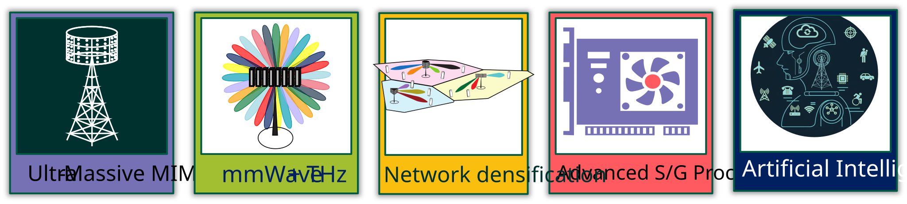

Integrated Sensing and Communication (ISAC)
Last updated on: 2026-05-30 by Vikram.
Introduction to ISAC
Integrated Sensing and Communication (ISAC), also referred to as joint communication and sensing (JCAS) in IEEE literature,is an emerging technology that unifies wireless communication and sensing within a single platform. The sensing will enable the network to perceive the physical environment using RADAR like capabilities without a perceivable impact on the communication performance. However, the integration of sensing and communication feature is not that straightforward and requires a careful design of the system. The design of the system should be such that it can support both communication and sensing functionalities without compromising on the performance of either.
Level of Integration between Communication and Sensing
Integration of communication and sensing can be achieved at various levels, ranging from spectrum sharing and co-existence to fully unified waveform design and joint signal processing.
Infrastructure Sharing: At this level, communication and sensing systems share the same physical infrastructure, such as antennas and transceivers. This allows for cost savings and efficient use of hardware resources, but the communication and sensing functions may still operate independently.
Spectrum Sharing and Co-existence: At this level, communication and sensing systems operate independently but share the same spectrum resources. This requires careful management of interference and coordination to ensure that both functions can coexist without significant performance degradation.
Unified Waveform Design: In this approach, the same waveform is designed to simultaneously support both communication and sensing functionalities. For example, an OFDM waveform can be adapted to incorporate radar-like sensing capabilities, allowing for the extraction of both communication and sensing information from the same signal.
Joint Signal Processing: At this level, communication and sensing functions are tightly integrated, with joint resource allocation and cross-layer optimization across network nodes. This allows for enhanced performance and efficiency, as sensing information can be used to improve communication processes, such as beamforming and channel estimation.
The level of integration depends on the specific use case, system requirements, and deployment scenarios.
Why Did ISAC Have to Wait Until 6G??
6G Networks will be equiped with advanced technologies such as large transmission bandwidths (cmWave, mmWave, and THz), massive MIMO antenna arrays, artificial intelligence, and advanced signal processing techniques. These technologies enable high-resolution delay–Doppler–angle estimation, facilitating precise localization and imaging capabilities. Communication waveforms, such as OFDM, can be adapted to incorporate radar-like sensing functionalities, allowing simultaneous extraction of communication and sensing information. The details of the hardware and compute capabilities of 6G networks are detailed in the following table:
Technology |
5G-Advanced |
6G |
|---|---|---|
Bandwidth |
Up to 100 MHz at FR1 |
Up to 200-400 MHz at FR1 and FR3 |
Up to 400 MHz at FR2 |
Up to 1 GHz at FR2 and THz range |
|
Frequency Bands |
700 MHz (Coverage) |
decimeter Wave (Coverage) |
Sub-6 GHz (Capacity) |
Sub-6 GHz, ~7 GHz (Capacity), |
|
mmWave with ABF (Precision) |
mmWave with DBF, THz with ABF (Precision) |
|
MIMO |
Up to 256 antennas |
4-16 times more antennas compared to 5G Networks |
AI Integration |
Limited AI capabilities |
Native AI integration |
Signal Processing |
Traditional DSP techniques |
Advanced signal processing techniques |
{kind=link}

Scope of this Website
This website will focus on the ISAC and related standardization work in 3GPP. The website will cover the following topics:
3GPP standardization work on ISAC
ISAC usecases in 6G
Standardization work across 3GPP working groups
ISAC related study items and work items in 3GPP
ISAC System Simulation and Performance Evaluation related Aspects
ISAC Channel Modeling and Measurement related Aspects
ISAC Waveform Design and Reference Signal related Aspects
ISAC Hardware and Implementation related Aspects
ISAC Signal Processing and AI related Aspects
ISAC RAN Digital Twin and Network Optimization related Aspects
Standards Driven Research on ISAC
Waveform design for ISAC
Reference signal design for ISAC
Channel modeling for ISAC
Resource allocation and scheduling for ISAC
AI for ISAC
Clutter cancellation algorithms for ISAC
Target detection algorithms for ISAC
Target localization algorithms for ISAC
Target tracking algorithms for ISAC
Communication assisted sensing via ISAC
Sensing assisted communication via ISAC
Sensing assisted beamforming for ISAC
Sensing assisted channel estimation for ISAC
Sensing assisted CSI acquisition for ISAC
Sensing assisted resource allocation for ISAC
Sensing assisted mobility management for ISAC
Sensing assisted interference management for ISAC
Sensing assisted localization for ISAC
Sensing assisted power control for ISAC
Sensing asssited power saving